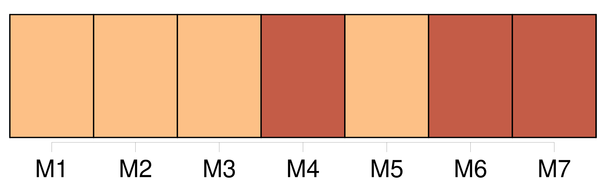
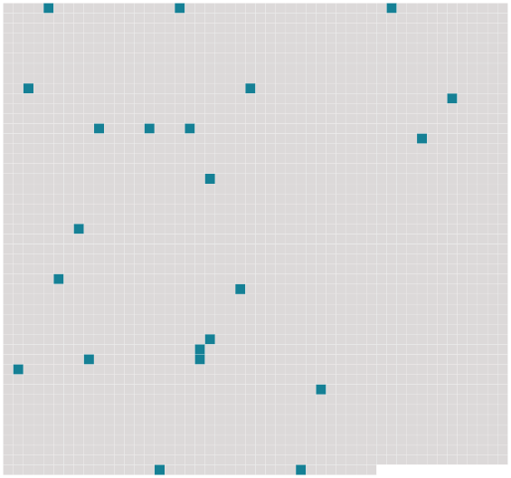

Longueur nb maillons : 22 mentions |
  |
.. » UN RÉVEILLON
Depuis un mois entier [je] chassais avec emportement, avec une joie sauvage, avec cette ardeur qu'on a pour les passions nouvelles. [J'] étais en Normandie, chez un parent non marié, Jules de Banneville, seul avec lui, sa bonne, un valet et un garde dans son château seigneurial. [10 phrases]
[Mon] cousin leva la tête : « Il ne fera pas chaud en se couchant, » dit -il. Indifférent, [je] répliquai : « Non, mais nous aurons du canard aux étangs demain matin. [2 phrases] [Mon] compagnon reprit : « Alors c'est ce soir la messe de minuit. [6 phrases] [Mon] cousin se tourna vers [moi] : « Si [tu] veux, dit -il, nous irons tout à l'heure voir ces pauvres gens. [3 phrases] Mais [je] ne sais pourquoi cette idée de Noël, au fond de cette solitude, nous mit en humeur de causer. [8 phrases]
» [10 phrases]
» [10 phrases] Jules [me] dit : « Sortons!! [3 phrases] « Ils veillent leur mort, dit [mon] cousin. [10 phrases]
Au bout de quelques minutes de silence, [mon] cousin demanda : « Eh bien, Anthime, votre grand-père est mort? [3 phrases] Alors, pour dire quelque chose, [j'] ajoutai : « Il était bien vieux. [2 phrases]
» [2 phrases]
[Mon] cousin, voyant leur trouble, insista. [6 phrases] Comme les petits-enfants du mort ne remuaient toujours pas, et demeuraient face à face, les yeux baissés, avec cette tête de bois des gens mécontents, qui semble dire : « Allez -vous -en, » [mon] cousin parla avec autorité : « Allons, Anthime, levez -vous, et conduisez -nous dans sa chambre. [13 phrases]
.. » |
 |
La ressource peut être téléchargée sur la page Ortolang
Si vous avez des questions ou vous voyez des erreurs, merci d'envoyer un mail à silvia.federzoni89@gmail.com
Site développé par S. Federzoni (contact)